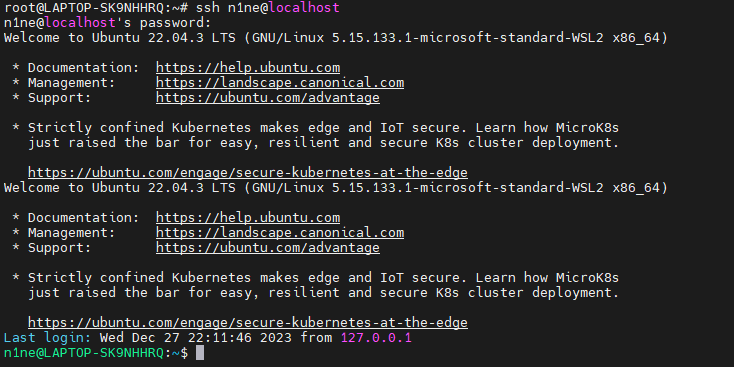

ssh skills
Date: 2023/12/27
Auth: Guanyan.Wang
Environment: Ubuntu 22.04
1. ssh
First, install ssh to your environment, here I will use Ubuntu for instance.
After install, we can use service to check current status of the ssh service.
If the status of the ssh service is start, just like the picture below,
 screen result
Reference
Writing device drivers in Linux: A brief tutorial
If there is any mistake
Please contact me at ninebro1211@gmail.com
More linux driver info: https://sysprog21.github.io/lkmpg/